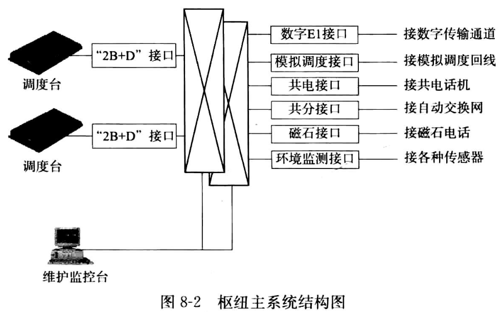
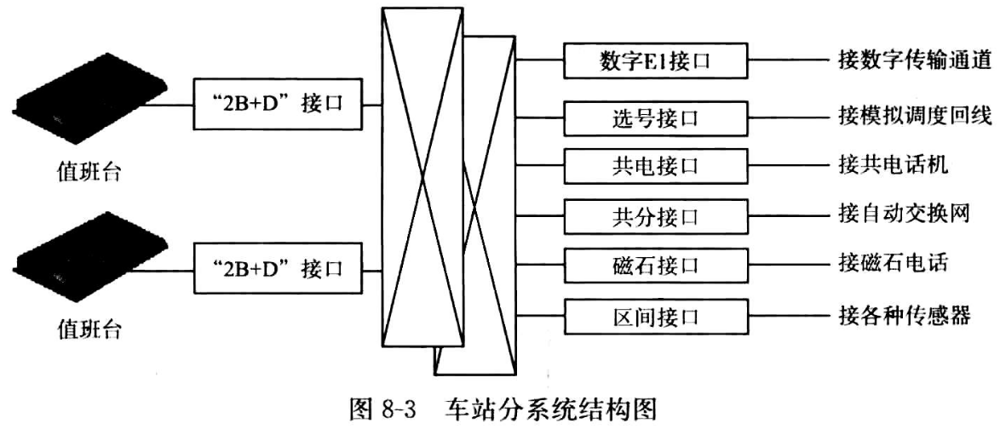
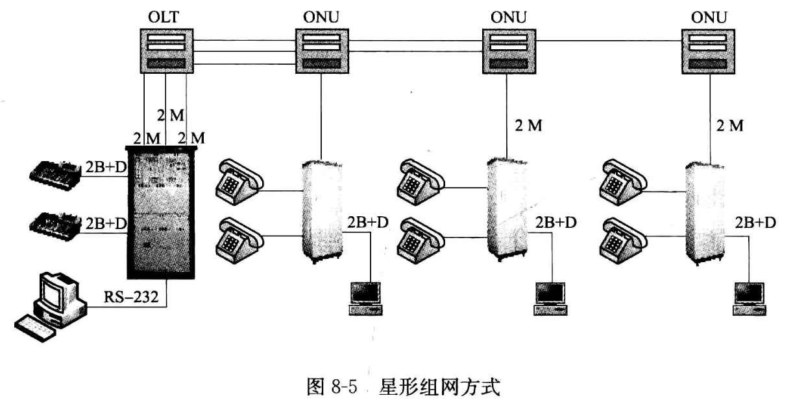
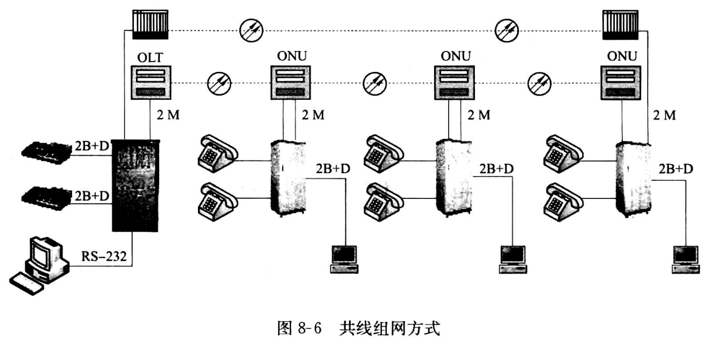
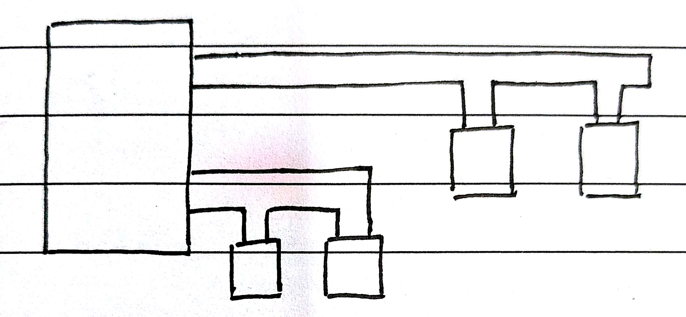
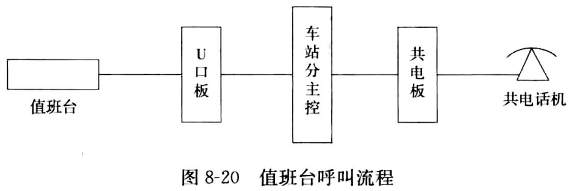
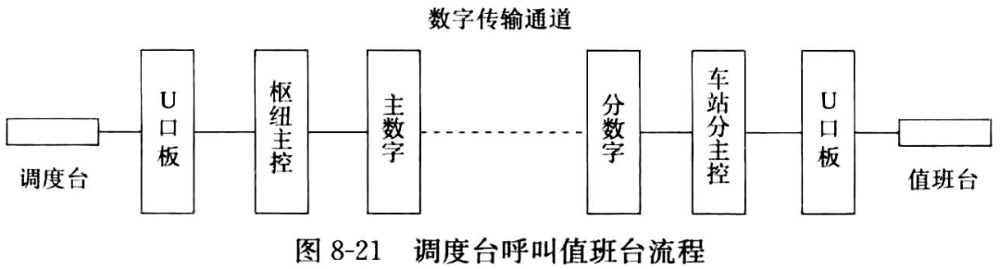
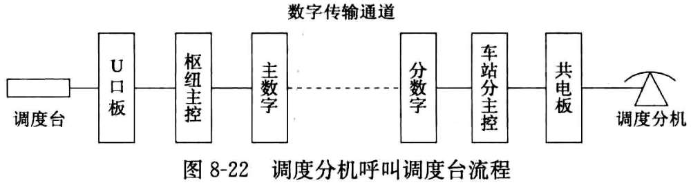
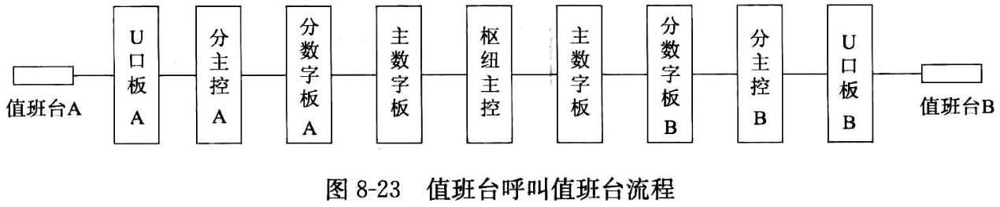

FH98: 飞鸿98铁路数字专用通信系统
首先讲明白，这个是用在既有线(老的低速铁路)的，现在已经过时了，会被逐步淘汰。
想起之前在某个地方看到的“专科生学的技术只能质保五年”，看来没错。(其实程序员更惨，顶级程序员每几个月就在换技术，次级一点的程序员每两年就得换一波技术)
一、系统结构: (铁路局或调度站)枢纽主系统 + 车站分系统
主系统: 系统后台、前台操作台、网管系统

- 数字E1接口: 2M数字通道
- 模拟调度接口: 备用
- (供)共电接口: 接需要供电的通信终端(如座机电话)
- 共分接口: 接自己供电的通信终端(如交换机、广播机)
- 磁石接口:
铁轨旁道口等地方的电话(不能拨号只能听) - 环境监测接口: 温度、电压、电流、红外线等传感器的回传数据
分系统: 后台交换网 + 前台操作台

二、系统网络结构
星型方式: 主系统到每一个分系统都有一个2M的接口:

共线(环形)方式:

综合(混合)方式:

三、系统主要业务
- 调度电话: 控制行车等
- 站场通信: 车站站内
- 站间通信: 两个车站之间
- 区间电话: 一段铁路线
- 站场广播接入: 值班员对车站内的广播
- 无线调度接入: 无线的调度
四、系统主要功能
- 远程调度(远程控制
主系统) - 系统级联(分多层控制，适应复杂的组网需要)
- 应急分机(可设置一个出故障时的备用电话机)
- 多通道录音仪(工作录音)
- 系统出入局(电话可以打到
外网) - 在线升级
- 全数字无阻塞交换(表明它支持bit传输)
- 稳定(主、备用，热切换)
五、枢纽主系统
主系统后台结构
- 主控层
- 数字模块层
- 模拟模块层
- 扩展模块层
枢纽主系统背板说明
- 数字层背板
- DB15接口
- E1数字接口
- 备份用跳线
- 主网层背板
- 模拟模块层背板
枢纽主系统容量
- E1 数字接口: 24
- 2B+D 接口(两个话音通道，一个信令通道): 60
- 模拟接口: 180
调度台最多可接: 48数字环自愈环最多可接: 12- 一个
数字环最多挂接分系统数: 50
主要电路板
- 主控板
- 音源板
- 会议板
- 主数字板
- 时钟板
- 信令板
- 模调总机板
六、车站分系统
...
七、端到端呼叫流程
值班台 呼叫 区间电话

值班台按下按钮，前台监测到该操作，上报给U口板U口板将此操作翻译成请求占用消号，发送给车站分主控板车站分主控板对此消息进行分析，根据数据确定目的分机所在的位置，将此数据发送给共电板共电板收到占用信号后，让共电-话机振铃- 当
共电话板监测到摘机后，将此摘机信号发送出去 此信号经过分主控、U口板的转发之后，最终到达值班台- 该
值班台相应的指示灯由闪烁变为长亮，表示呼叫成功，双方可以进行通话了 - 通话结束后，若
共电话机的人先挂机，共电板检测到挂机信号，会将它翻译成挂机信号，发送到值班台 值班台收到挂机信号后，指示灯熄灭，说明对方已挂机
调度台 呼叫 值班台

调度员按下某按钮，机器上报给U口板U口板将此操作翻译成请求占用信号，发送给枢纽主控板枢纽主控板对此消息进行分析，确定用户所在位置后，将此信号发送到主数字板上主数字板直接将此信号发送到对应车站分系统的分数字板上分数字板将信号转发给车站分主控板车站分主控板对此信号进行分析，确定目的分机所在地，将此信号发送给U口板U口板收到请求占用信号后，将其送到值班台，值班台上的指示灯闪烁并振铃- 当
值班员按下按钮应答时，U口板会检测到应答操作，将其翻译为应答信号，发送给车站分主控板 - 此信号通过
分数字板、主数字板、枢纽主控、U口板的转发后，最终到达调度台 调度台指示灯由闪烁变为长亮，表示呼叫通道已建立，双方现在可进行通话- 若
值班员先挂机，则车站分系统的U口板会检测到挂机操作，将此操作翻译为挂机信号，并经过反向信道传递给调度台，调度台指示灯熄灭，表示对方已挂机
调度分机 呼叫 调度台

值班台 呼叫 值班台
